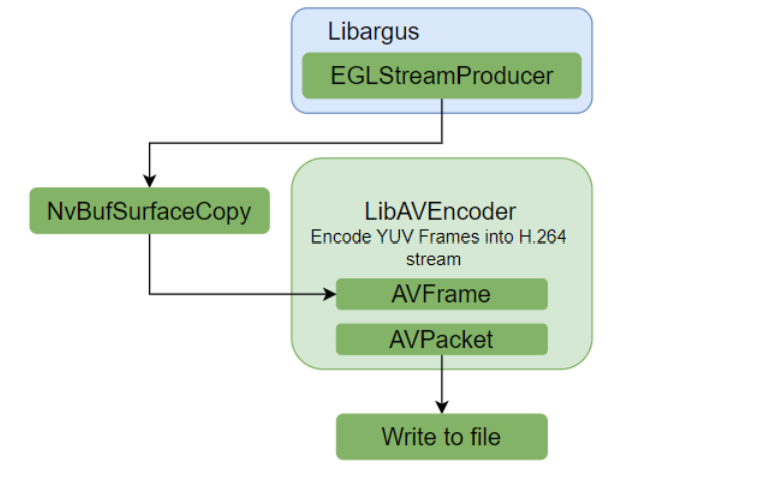
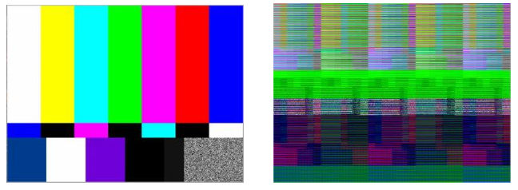

Software Encode in Orin Nano#
The NVIDIA® Jetson™ Orin Nano does not have the NVENC engine. This application note provides information about how to migrate to software encoding using the libav (FFmpeg) encoders, and the section on the GStreamer pipelines provides details on how to use the software encoding as part of the NVIDIA-accelerated gstreamer pipelines. This document shows only the encoding of H.264 codec format.
Argus Camera Software Encode Sample#
This section will demonstrate the encoding of H264 in Jetson Orin Nano using the libav encoder (libx264) with input from the camera with the 19_argus_camera_sw_encode sample.
This sample demonstrates how to use libargus to set up the camera class components for a capture operation. An EGLStream is also created to connect to the software video encoder and allows you to capture encoded video streams to a file.
Building and Running#
Before you can build and run the sample, ensure that you meet the following prerequisites:
You have a connected camera.
You have completed steps 1-3 in Building and Running.
For step 2, install the jetpack using the Quickstart Guide.
If you are building from your host Linux PC (x86), complete step 4 in Building and Running.
You have extracted the package by completing the following steps:
Download the
argus_cam_libavencoder_src.tbz2package from the L4T Driver Package (BSP) Sources.Extract the
argus_cam_libavencoder_src.tbz2package in the/usr/src/jetson_multimedia_api/samplespath.
To build, run the following commands:
$ cd /usr/src/jetson_multimedia_api/samples/19_argus_camera_sw_encode
$ make
The sample creates the H.264 video file in the current directory.
To run, run the following command:
$ ./camera_sw_encode [OPTIONS]
Supported Options#
Table 1 provides a list of supported options.
Option |
Description |
Default |
|---|---|---|
-r |
Set output resolution WxH |
640x480 |
-f |
Set output filename |
output.h264 |
-d |
Set capture duration |
5 seconds |
-i |
Set camera index |
0 |
-v |
Enable verbose message. |
False |
-p |
Encoder input format 1 -NV12,2-1420 |
1 (NV12) |
-H |
Print this help. |
Flow#
Here is the flow of data through this sample:

This sample demonstrates the camera producer and consumer programming model. The image output is performed using the EGLStream, and the EGLStream output is of the type NV12 format with a Block Linear layout structure. The Libav Encoder supports only CPU memory, so the output from EGLStream is converted to CPU-accessible system memory using NvBufSurfaceCopy. After the H.264 stream output is obtained, it is written to the file output.
Key Structure and Functions#
The following classes are used in this application:
Argus Producer Thread The Argus producer thread class opens the Argus camera driver, creates a BufferOutputStream to output frames, and performs repeating capture requests for CAPTURE_TIME seconds before closing the producer and Argus driver.
Consumer Thread class The ConsumerThread class acquires frames from BufferOutputStream and provides it as input to the video encoding module (libav-libx264 encoder). The encoder will encode the frames and save the encoded stream to disk. For more information about libargus and the EGLStream, refer to the libargus documentation. For more information on the libav-libx264 encoder, refer to the FFmpeg documentation.
The ConsumerThread class packages the video encoding-related elements and functions. The key members used in the sample are provided in the following table:
ConsumerThread
Description
const AVCodec codec;
Holds the codec type and encoder to be used.
AVCodecContext m_enc_ctx;
Holds the codec information.
AVFrame m_frame;
Holds the input YUV frame information.
AVPacket m_pkt;
Holds the output bitstream information.
NvBufSurface* sysBuffers[NUM_BUFFERS];
The set of input buffers that holds the CPU-accessible software memory after reading and copying data from the hardware memory.
createVideoEncoder
Initializes the software video encoder and set properties.
destroyVideoEncoder
Destroys the software video encoder.
libavEncode
Performs encoding using libav APIs and writes output to file.
The following table lists the different libav-libx264 APIs that are used to encode:
Libav APIs
Description
avcodec_find_encoder_by_name
Finds a registered encoder with the specified name (using libx264)
avcodec_alloc_context3
Allocates the AVCodecContext.
avcodec_open2
Opens the libx264 encoder.
av_frame_alloc
Allocates AVFrame and fills with default values.
av_packet_alloc
Allocates AVPacket and fills with default values.
av_init_packet
Initializes optional fields of a packet with default values.
av_frame_make_writable
Ensures that the frame data is writable.
avcodec_send_frame
Supplies a raw video frame to the encoder.
avcodec_receive_packet
Reads encoded data from the encoder.
av_packet_unref
Wipes the packet.
av_packet_free
Frees the AVPacket.
av_frame_free
Frees the AVFrame.
avcodec_close
Closes the libx264 encoder.
avcodec_free_context
Frees the codec context and everything associated with it and write NULL to the provided pointer.
Hardware-to-Software Encoder Properties Mapping#
The following basic properties of the hardware encoder can be mapped directly to the software encoder:
..note:
To use the other properties specific to the software encoder, refer to the `libx264 documentation <http://www.chaneru.com/Roku/HLS/X264_Settings.htm>`_.
Set the bitrate control method (VBR, CBR) using the bitrate, vbv-maxrate, and vbv-bufsize options.
Set the CABAC/ CAVLC entropy encode mode using the no-cabac option.
Set the lossless output can be obtained by setting qp to 0.
Insert the Access unit delimiter (AUD) at IDR or I frame using the aud option.
Set the number of concurrent B-frames using the bframes option.
Set the number of reference frames using the ref option.
Set the encoding profile/level using the profile and level options respectively.
Enable the Extended color format using the fullrange option.
Set the encoding frames per second (fps) using the fps option.
Set the sample aspect ratio using the sar option.
Buffer Compatibility#
The NVENC engine supports input YUV formats I420, NV12, NV24, and P010_10LE.
The libav - libx264 encoder supports only input YUV formats of I420 and NV12 among these formats and the other formats supported are I422, I444, NV16, NV21, GRAY, I420_10LE, I422_10LE, I444_10LE, GRAY_10LE. To enable support for the other formats, an additional NvBufSurfTransform is required.
The software encoder supports only CPU-accessible pitch linear memory.
When the hardware block linear buffers must be sent as input for encoding, an additional hardware to software copy is required. This can be performed using NvBufSurfaceCopy.
NvBufSurfaceCopy Output#

The image on the left indicates the output, after an NvBufSurfaceCopy is completed, to convert the hardware block Linear buffers to the software CPU-accessible system memory, and is fed to the AVPicture. The image on the right indicates the output after the direct passing of the software-mapped block linear buffers to the AVPicture.
Performance and Quality Comparison Numbers#
The following table is an example of the performances that can be expected with libx264 encoding when you use preset as the varying parameter. Here, a bitstream input that has been encoded with 30Mbps for a frame rate of 30 is encoded again to 4Mbps constant bitrate using libx264. The CPU usage is also indicated for six cores (default #cores in Jetson Orin Nano). Libx264 supports 10 different presets that range from ultrafast to placebo, where ultrafast is the fastest preset available.
x264
FPS
CPU Usage (per core)
ultrafast
96.73
47%
superfast
80.44
55%
veryfast
60.96
66%
faster
39.19
75%
fast
28.4
82%
medium
23.11
85%
slow
15.01
88%
slower
8.75
90%
veryslow
3.85
94%
placebo
0.78
98%
The following table shows the maximum performance when you tune the default parameters. These parameters are additionally tuned by configuring the GOP structure to be similar to the NVIDIA hardware H.264 encoder by setting a few configurable parameters. These changes include setting the IDR frame interval and the I frame interval to 30, setting the number of references to 1, disabling B frames, and disabling the AQ mode setting.
x264
FPS
CPU Usage (per core)
ultrafast
99.11
49%
superfast
87.89
52%
veryfast
83.02
58%
faster
73.16
65%
fast
53.13
72%
medium
51.86
75%
slow
36.93
78%
slower
33.43
80%
veryslow
24.28
85%
placebo
4.69
92%
The following table is an example of the bitrate/PSNR of libx264 encoder when you use preset as the varying parameter and maintain a constant bitrate of 4Mbps.
x264
FPS
PSNR (in dB)
ultrafast
4135.56
46.964
superfast
4047.64
47.432
veryfast
4055.3
48.277
faster
4045.23
47.421
fast
4054.13
48.275
medium
4045.26
47.421
slow
4045.81
47.423
slower
4036.69
47.389
veryslow
4038.33
47.402
placebo
4047.1
47.431
The following table is an example of the performances that can be expected with libx264 encoding when the input is rate-limited. Here, the camera that provides the input at the rate of 30 frames per second is encoded with a target constant bitrate of 10 Mbps using libx264 with preset as the varying parameter. The CPU usage is also indicated for six cores (default #cores in Jetson Orin Nano).
x264
FPS
CPU Usage (per core)
ultrafast
30.66
38%
superfast
30.07
41%
veryfast
29.95
54%
faster
29.95
55%
fast
13.42
75%
medium
10.98
77%
slow
5.07
80%
slower
3.72
82%
veryslow
2.01
84%
placebo
0.11
95%
In the following table, the GOP structure has been configured to be similar to the NVIDIA hardware H.264 encoder. The configurations include the IDR frame interval and I frame interval have been set to 30, the number of references is set to 1, the b frames have been disabled, and the aq mode setting has been disabled.
x264
FPS
CPU Usage (per core)
ultrafast
31.88
19%
superfast
30.23
18%
veryfast
30.12
22%
faster
30.54
32%
fast
30.77
45%
medium
30.19
48%
slow
31.57
55%
slower
31.45
60%
veryslow
31.8
90%
placebo
6.49
100%
GStreamer Pipelines#
This section provides information about GStreamer pipelines.
Camera and Encoding Pipelines#
The following command demonstrates the H.264 software encode using the x264enc plugin with input from the camera plugin that uses Argus API.
$ gst-launch-1.0 nvarguscamerasrc ! \
'video/x-raw(memory:NVMM), width=(int)1920, height=(int)1080, \
format=(string)NV12, framerate=(fraction)30/1' ! nvvidconv ! \
video/x-raw, format=I420 ! x264enc ! \
h264parse ! qtmux ! filesink \
location=<filename_h264.mp4> -e
Transcode Pipelines#
The following command demonstrates H.264 decode to H.264 software Encode (NVIDIA- accelerated decode to software encode).
$ gst-launch-1.0 filesrc location=<filename_1080p.mp4> ! qtdemux ! \
h264parse ! nvv4l2decoder ! \
'video/x-raw(memory:NVMM), format=NV12' ! \
nvvidconv ! video/x-raw, format=I420 ! x264enc ! \
h264parse ! filesink location=<Transcoded_filename.h264> -e